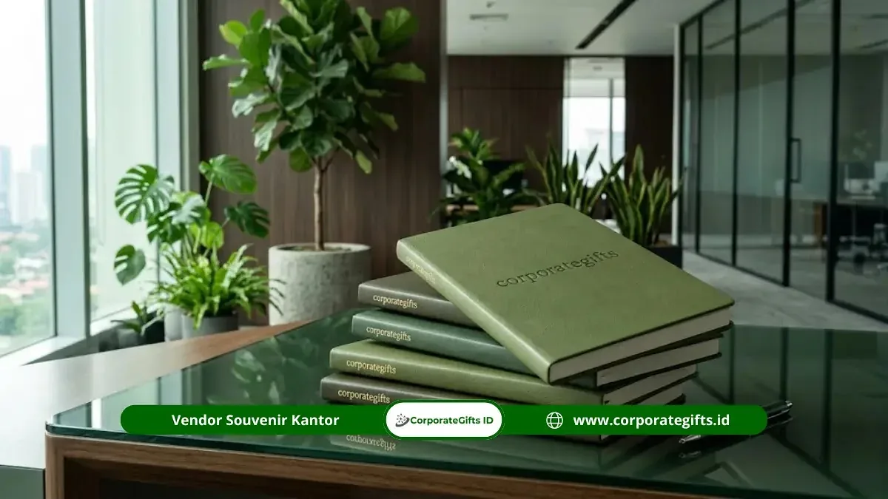

Corporate Gifts - Banyak mahasiswa merasa ragu saat harus memutuskan souvenir apa yang pantas diberikan kepada dosen penguji setelah sidang skripsi selesai.
Cara memilih souvenir dosen penguji skripsi yang tepat sebenarnya bergantung pada tiga faktor utama, yaitu kesesuaian budget, tingkat formalitas, dan kepraktisan barang bagi penerima.
Memahami faktor ini membantu mahasiswa menghindari pilihan yang terlalu mahal, terlalu sederhana, atau kurang relevan dengan konteks akademik.
Mengapa Pemilihan Souvenir Perlu Dipertimbangkan dengan Cermat?
Souvenir yang diberikan kepada dosen penguji mencerminkan kesan akhir dari proses akademik yang telah dijalani.
Pemilihan yang tepat menunjukkan rasa hormat dan profesionalisme, sementara pilihan yang kurang tepat dapat menimbulkan kesan kurang matang dalam etika akademik.
Apa Faktor Utama dalam Memilih Souvenir Dosen Penguji?
Faktor utama meliputi kesesuaian budget, jumlah dosen penguji yang akan menerima, jenis barang yang relevan dengan profesi akademisi, serta tingkat personalisasi yang memungkinkan tanpa terkesan berlebihan.
Kesesuaian Budget dengan Jumlah Penerima
Budget sebaiknya disesuaikan dengan jumlah dosen penguji dalam satu sidang, yang umumnya terdiri dari dua hingga tiga orang.
Pembagian anggaran yang proporsional menghindarkan mahasiswa dari pengeluaran berlebihan, sekaligus menjaga kualitas souvenir tetap konsisten antar penerima.
Relevansi dengan Profesi Akademisi
Barang yang relevan dengan kebutuhan akademisi, seperti notebook, pulpen, atau plakat penghargaan, lebih tepat dibandingkan barang yang bersifat terlalu personal atau tidak sesuai konteks profesional.
Tingkat Personalisasi yang Wajar
Personalisasi nama atau gelar dosen pada souvenir memberikan kesan khusus, namun sebaiknya tetap sederhana agar tidak terkesan berlebihan atau memaksa.
Bagaimana Menyesuaikan Souvenir dengan Karakter Dosen Penguji?
Menyesuaikan souvenir custom dengan karakter dosen dapat dilakukan dengan memperhatikan kebiasaan umum di lingkungan akademik, seperti preferensi terhadap barang fungsional dibandingkan dekoratif.
Jika informasi karakter dosen tidak diketahui secara spesifik, pilihan netral seperti plakat, notebook, atau hampers cenderung lebih aman digunakan secara umum.

Bagaimana Berkoordinasi dengan Kelompok dalam Pemilihan Souvenir?
Jika beberapa mahasiswa atau kelompok sidang berbagi dosen penguji yang sama, berkoordinasi sejak awal membantu menghindari duplikasi souvenir dan memungkinkan pembagian biaya yang lebih efisien.
Koordinasi ini juga menjaga konsistensi kualitas dan tampilan souvenir antar kelompok yang dijadwalkan pada hari sidang yang berdekatan.
Kapan Waktu yang Tepat untuk Menentukan Pilihan Souvenir?
Penentuan souvenir sebaiknya dilakukan jauh sebelum hari sidang agar proses produksi dan personalisasi, terutama untuk barang custom, dapat diselesaikan tanpa terburu-buru.
Pemesanan mendadak berisiko membatasi pilihan desain dan memperpanjang waktu pengerjaan.
Secara umum, vendor souvenir korporat di Indonesia membutuhkan waktu produksi yang bervariasi tergantung jenis barang dan tingkat personalisasi, sehingga perencanaan lebih awal sangat disarankan.
Mengapa Memilih Vendor Terpercaya Penting dalam Proses Ini?
Vendor yang terpercaya memastikan kualitas bahan, ketepatan waktu produksi, serta konsistensi hasil personalisasi pada setiap unit souvenir.
Corporategifts.id menyediakan layanan custom souvenir akademik dengan opsi desain plakat, hampers, hingga notebook branded yang dapat disesuaikan dengan kebutuhan sidang skripsi maupun acara akademik lainnya.
Apa Kesalahan Umum yang Sebaiknya Dihindari?
Beberapa kesalahan umum dalam memilih souvenir dosen penguji meliputi pemesanan terlalu mendekati hari sidang, memilih barang yang terlalu personal atau tidak relevan dengan konteks akademik, serta tidak memeriksa konsistensi kualitas antar unit jika dipesan dari sumber yang berbeda.
Memesan Terlalu Mendekati Hari Sidang
Pemesanan mendadak sering membatasi pilihan desain dan bahan, terutama untuk souvenir yang memerlukan proses personalisasi seperti ukiran atau cetak nama.
Perencanaan minimal beberapa minggu sebelum sidang membantu menghindari risiko ini.
Memilih Barang yang Tidak Relevan dengan Konteks Akademik
Souvenir yang terlalu personal, seperti barang dengan tema yang sangat spesifik atau bernuansa pribadi, berisiko terasa kurang pas dalam konteks formal akademik.
Barang yang bersifat netral dan fungsional umumnya lebih aman digunakan secara umum.
Tidak Memeriksa Konsistensi Kualitas Antar Unit
Jika souvenir dipesan dalam jumlah lebih dari satu, penting memastikan kualitas, warna, dan hasil personalisasi konsisten pada setiap unit agar tidak menimbulkan kesan timpang antar dosen penguji yang menerimanya.
FAQ Seputar Souvenir Dosen Penguji Skripsi
Kesimpulan Praktis
Memilih souvenir dosen penguji skripsi yang tepat membutuhkan pertimbangan budget, relevansi profesi, personalisasi yang wajar, koordinasi kelompok, serta waktu pemesanan yang cukup.
Dengan perencanaan yang matang, mahasiswa dapat memberikan kesan akhir yang profesional sekaligus berkesan.
Konsultasikan kebutuhan souvenir akademik Anda bersama Corporategifts.id untuk mendapatkan rekomendasi desain dan budget yang sesuai.
Baca juga 5 ide souvenir dosen penguji skripsi hemat tapi tetap elegan untuk inspirasi produk, serta pelajari etika dan waktu tepat memberikan souvenir untuk dosen penguji skripsi.
Disclaimer: Informasi mengenai harga, waktu produksi, dan ketersediaan produk dapat berubah sewaktu-waktu sesuai kondisi vendor dan permintaan pasar. Artikel ini disusun berdasarkan pengetahuan umum mengenai etika akademik dan praktik corporate gifting di Indonesia.